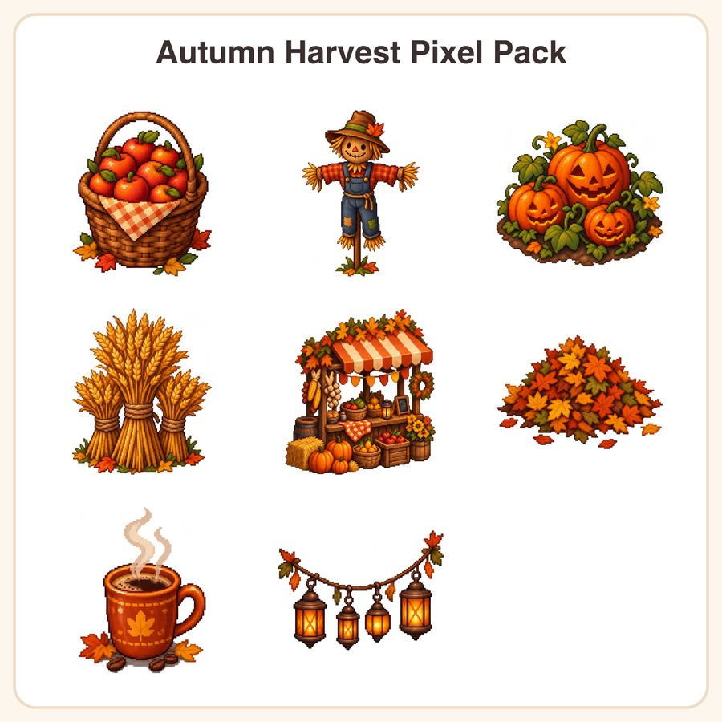

$4.99
Buy nowGet it on itch.ioView on EtsyCelebrate the cozy season with our Autumn Harvest Pixel Pack! Perfect for indie game developers and pixel art fans, this versatile asset collection brings fall's warm spirit to your projects. Create charming harvest scenes, seasonal festivals, or cozy game environments with ease. Whether you’re designing a fall-themed game or adding seasonal flair, these assets are ready to enhance your creative workflow. What’s Included: - 1 Apple harvest basket (HD PNG) - 1 Tall scarecrow (HD PNG) - 1 Pumpkin patch scene with jack-o'-lanterns (HD PNG) - 1 Harvest wheat sheaves (HD PNG) - 1 Bustling harvest festival stall (HD PNG) - 1 Fall leaf pile (HD PNG) - 1 Hot coffee mug with steam (HD PNG) - 1 Festive lanterns hanging (HD PNG) File Formats & Sizes: - PNG files at 512px resolution - 1024px transparent PNGs files for scalable use How to Use: Simply download the files and incorporate them into your game scenes, backgrounds, or menus. These assets are compatible with most game engines and graphic editors. License: Personal and small-business commercial use allowed up to 500 units. Files may not be resold or redistributed. Note: These designs were created by our shop with the help of AI tools to facilitate a wide variety of stylized assets. We ensure quality and uniqueness in our collections.